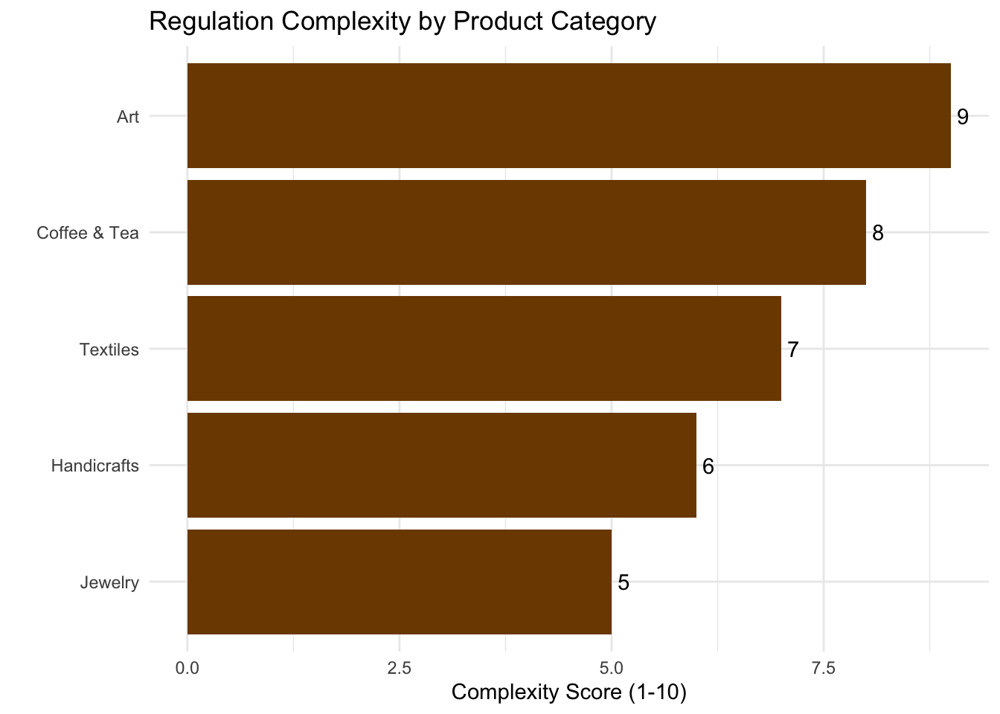

Understanding and navigating the trade regulations governing commerce between Rwanda and Kenya is crucial for RwandaMarket’s successful cross-border operations. We are committed to ensuring full compliance with all relevant laws and treaties.
Key Trade Agreements and Regulatory Frameworks
1. East African Community (EAC) Regulations
EAC Customs Union
- Facilitates duty-free movement of goods within the EAC
- Implements a Common External Tariff (CET) for goods imported from outside the EAC
- Provides harmonized customs procedures
Common Market Protocol
- Allows free movement of goods, services, and capital among EAC member states
2. African Continental Free Trade Area (AfCFTA)
Both Rwanda and Kenya are signatories to the AfCFTA, which aims to create a single continental market for goods and services, further facilitating cross-border trade.
3. Kenyan E-commerce Regulations
Data Protection Act (2019)
- Ensures protection of personal data in digital transactions
- Requires compliance in data collection, processing, and storage
Consumer Protection Act
- Safeguards consumer rights in digital transactions
- Outlines responsibilities of e-commerce platforms in consumer protection
Import/Export Procedures
Documentation Required
- Commercial Invoice
- Packing List
- Certificate of Origin
- Bill of Lading/Airway Bill
- Import Declaration Form (IDF)
- Pre-Export Verification of Conformity (PVoC)
EAC Certificate of Origin
- Required for preferential tariff treatment within the EAC
- Proves that goods originate from within the EAC
Customs Clearance Process
[PLACEHOLDER: Step-by-step guide to the customs clearance process]
Product-Specific Regulations
Coffee and Tea
- Phytosanitary certificates required
- Quality standards set by the East African Standards Committee
Handicrafts
- Cultural property export permits may be required for certain items
- CITES permits for products made from protected species
Textiles
- Rules of origin documentation to qualify for duty-free status under EAC
- Compliance with textile labeling requirements
Regulation Complexity by Product Category
Tariffs and Taxes
- Value Added Tax (VAT): 16% in Kenya
- Import Duty: Varies by product category (many products duty-free under EAC)
- Excise Duty: Applicable to certain luxury goods
Standards and Quality Requirements
- Compliance with EAC standards necessary for all imported goods
- Specific standards may apply to different product categories
Compliance Strategies
To navigate these regulations efficiently and ensure smooth cross-border trade for our B2C and B2B operations, RwandaMarket implements the following strategies:
- Regular training for staff on current regulations
- Partnerships with customs brokers in both Rwanda and Kenya
- Use of digital tools for automated compliance checks
- Proactive engagement with regulatory bodies
Conclusion
RwandaMarket is committed to full compliance with all trade regulations governing commerce between Rwanda and Kenya. By staying informed about regulatory changes, maintaining strong relationships with regulatory bodies, and implementing robust compliance processes, we aim to provide a seamless and legally compliant cross-border shopping experience for our customers.